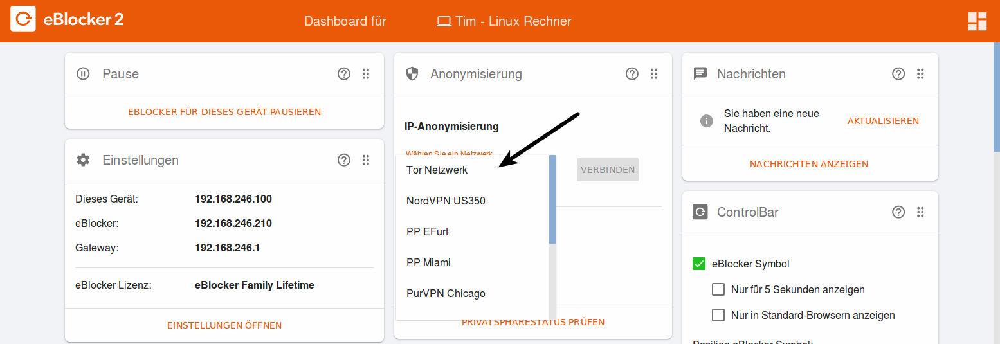
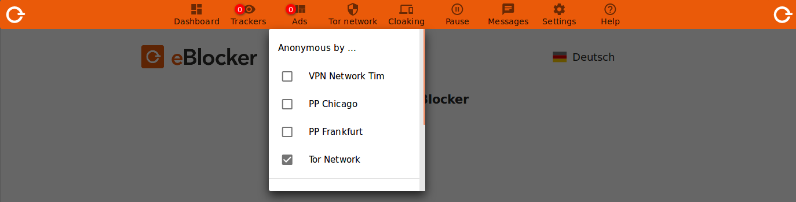

Deutsch | English
Wir empfehlen, die Tor-Netzwerk Anonymisierungsfunktion nicht dauernd und für den täglichen Gebrauch zu verwenden, sondern nur beim Abruf von sehr sensiblen Inhalten.
Die Tor-Anonymisierungsfunktion kann die Geschwindigkeit des Internetzugangs unter anderem erheblich beeinträchtigen und der eBlocker schützt Ihre Privatsphäre in vielen Fällen auch ohne die Verwendung vom Tor-Netzwerk.
Um eine Verbindung zum Tor-Netzwerk zu aktivieren rufen Sie im Browser das eBlocker Dashboard auf. Dies können Sie mit der Webseite setup.eblocker.com, oder eblocker.box.
Auf der "Anonymisierung" Karte klicken Sie auf "Wählen Sie ein Netzwerk" und wählen "Tor Netzwerk" aus. Danach klicken Sie auf den Button "Verbinden".

Sollten Sie die Karte "Anonymisierung" nicht auf dem Dashboard sehen, klicken Sie bitte oben recht auf das Dashboard Icon und lassen Sie sich die Karte anzeigen.
Die erfolgreiche Verbindung wird in der "Anonymisierung" Karte im Anschluss angezeigt. Auf Wunsch können Sie auch hier die Verbindung zum Tor Netzwerk beenden.
Alternativ können Sie auch über die eBlocker Controlbar die Verbindung zu dem Tor Netzwerk herstellen. Öffnen Sie die Controlbar, klicken Sie auf "IP-Anon" und wählen Sie "Tor Netzwerk" aus.

Nach Aktivierung des Tor-Netzwerks, wird das IP-Anon-Symbol zusätzlich in der Controlbar mit einem Karomuster ausgefüllt, um zu signalisieren, dass die IP-Anon-Funktion aktiv ist. Fortan werden sämtliche HTTP und HTTPS-Anfragen durch das Anonymisierungsnetzwerk geleitet.

Um die Tor-Verbindung wieder zu trennen, klicken Sie auf das „IP-Anon“-Symbol und dann auf „Tor-Netzwerk“. Das Karomuster im Anon-Symbol in der Controlbar wird nicht mehr angezeigt.
Sie erreichen die Tor-Netzwerk Einstellung auch über die eBlocker Einstellung > Menü IP-Anonymisierung im Reiter Tor-Netzwerk.
Hier können Sie sogenannte Ausgangsserver aus verschiedenen Ländern auswählen, von denen der eBlocker eines der Länder bei der Aktivierung vom Tor-Netzwerk auswählt. Wenn kein Land ausgewählt wurde, wird ein Ausgangsserver aus einem beliebigen Land verwendet.
In unserem eBlocker Handbuch finden Sie weitere Informationen im Kapitel 8.6.1.
Hintergrund
Das Tor-Netzwerk ist ein nicht-kommerzieller Zusammenschluss von Menschen auf der ganzen Welt, die kostenlos Netzwerk-Infrastruktur bereitstellen, damit Nutzer Ihre IP-Adresse beim Surfen im Internet anonymisieren können. (Quelle: Wikipedia)
Das Tor-Netzwerk garantiert jedoch keine Verfügbarkeit oder Mindestbandbreite. Dies liegt leider auch außerhalb der Kontrolle von eBlocker. Wir können über den eBlocker nur einen sehr leichten Zugang zu Tor ermöglichen.
Tatsächlich ist bei Tor die Datenrate für das Streamen von Audio oder Video-Daten oftmals nicht ausreichend.
Die Anonymisierungsfunktion von Tor bringt keinen zusätzlichen Schutz, wenn Sie einen Dienst verwenden, bei dem Sie sich anmelden müssen (wie z.B. Online-Einkauf, Lesen von Web-Mails etc.): Der Anbieter weiß dann ohnehin, wer Sie sind.
Wichtig ist primär, dass Sie beim Surfen – auch beim Einkauf oder Lesen von Web-Mails – nicht von Dritten unbemerkt beobachtet werden. Genau davor schützt Sie der eBlocker standardmäßig, indem alle Datensammler und Daten sammelnde Werbenetzwerke blockiert werden.
Unser Tipp: Aktivieren Sie Tor nur dann, wenn Sie sensitive Inhalte abrufen und Sie sicherstellen möchten, dass Sie keinesfalls über Ihre IP-Adresse identifiziert werden können. Beispielsweise können Sie Tor bei Recherchen zu einem gesundheitlichen Problem einschalten, wenn Sie sicherstellen möchten, dass das Gesundheitsportal niemals Ihre Identität und damit eine Verbindung zur recherchierten Krankheit herstellen kann.
Beachten Sie bitte auch unsere FAQ‘s.